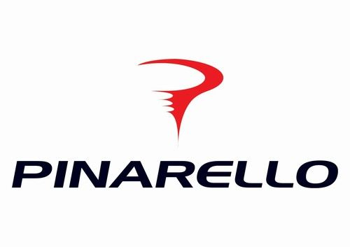
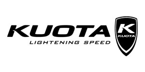

Brand List
お気に入りのブランドを見つけよう
お気に入りのブランドを見つけよう


Cannondaleは主に高性能アルミ製フレーム生産にこだわっています。多少値段は割高になりますが、高品質で高機能の製品を生産数を抑えて販売するスタイルです。高性能のバイクに乗りたい方にオススメです！
FUJIは日本発祥のアメリカメーカーです。「良い商品を低価格で提供する」という創業時から変わらぬモットーで、安価で質の高い自転車をリリースし続けています。

SPECIALIZEDのロードバイクはハイスペックで有名です。フレームの形状によって乗り心地を重視したモデルがあるなど初心者にも乗りやすいエントリーモデルから本格的なレースモデルまで幅広く展開されています。

TREKには３大モデル「MADONE」「DOMANE」「EMONDA」が存在します。それぞれのモデルが異なった特徴を持っており、初心者からベテランまで自分に合うロードバイクを見つけることができます。

BIANCHIでまず特筆すべき点は価格帯です。上は200万から下は10万台まで幅広いです。プロチームに提供している機材から、これからロードバイクを始める初心者にもオススメの機材まで揃っています。

CINELLIは３大イタリアンメーカーの１つです。老舗らしからぬ斬新さを持つ独特のこだわりがあり、CINELLIのユニークさは今なお愛され続けています。CINELLIはアルミハンドルバーにストラップ、樹脂サドル、クイックリリースペダルも生み出してきました。

PINARELLOはロードバイクブランドの中でも高級で華やかな存在感があります。性能についても世界大会でサポートしているチームがツール・ド・フランスで総合優勝4回するなど圧倒的な成績を残しています。

KUOTAは世界的なトップブランドの１つです。KUOTAの特徴は優れた技術力と洗練されたデザイン性、そしてレーシングバイクとしての性能を追求するために情熱を持ち続けて開発を進める考え方です。

GIANTの特徴は、コストパの良さです。自転車を構成するギアやブレーキのコンポーネントのコスパが素晴らしく、他メーカーの1クラス上のコンポを採用する初級者モデルもある位で、非常に親切で、コスパに優れたモデルを購入可能な選び方が、好評と評判です。

MERIDAの一番の魅力は技術力の高さです。自社ブランドを初めたころから開発にも力を入れて、世界的にもかなり稀なマグネシウムフレームを取り入れています。 また、コスパもよく15万円あたりから性能の良いロードバイクを見つけることができます。

Anchorは、ブリヂストンサイクルが展開している本格スポーツサイクルのブランドです。 ブリヂストンといえば自動車タイヤの製造・販売の会社として有名ですが、1964年に自社の自転車競技部門を立ち上げました。チームブリヂストンサイクリングは、数々のレースにおいて好成績を残しています。